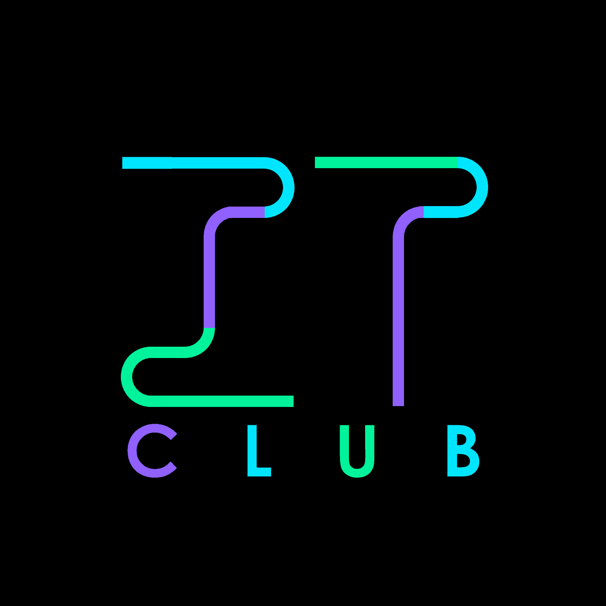
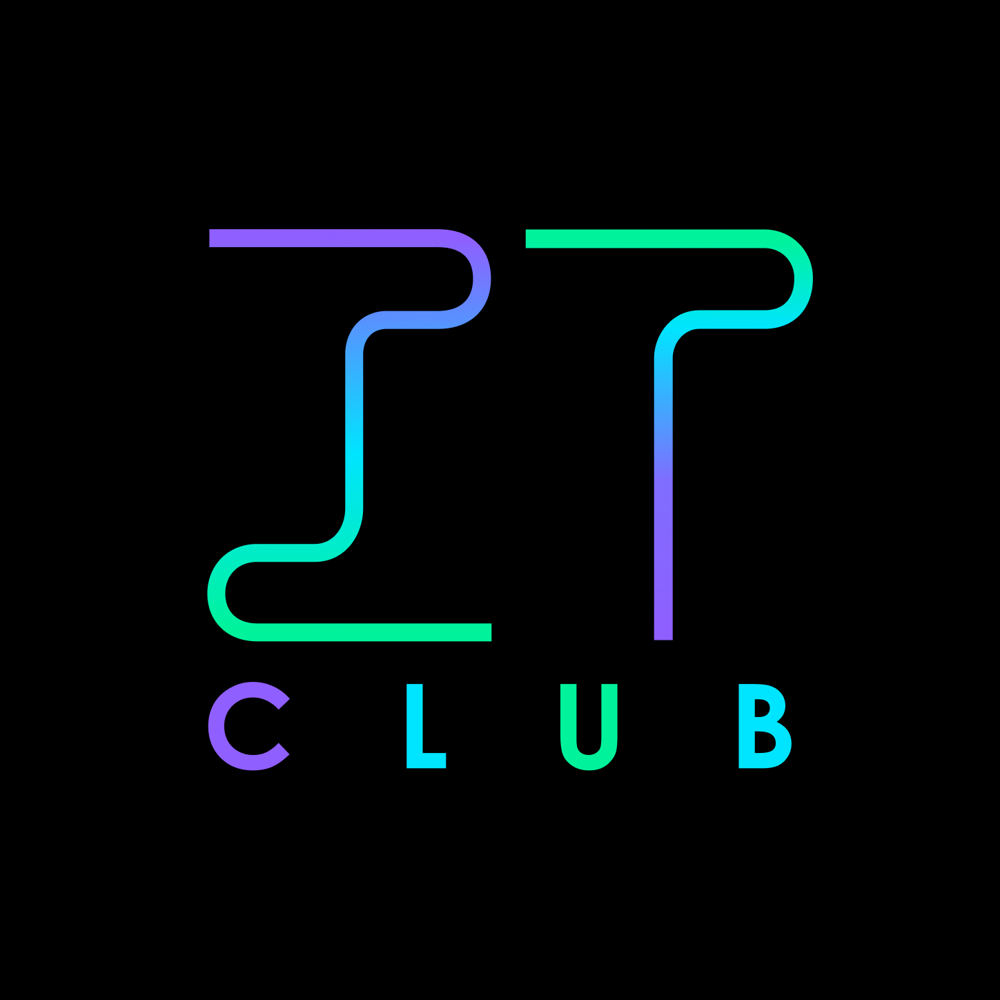

The IT Club
The Project
In June of 2021, I joined The IT Club as a volunteer. I wanted to help out but didn't have any computers to work on at the time
After some hard work, I rose the ranks and got my position as Director of New York. I can now help the organization with more organizational challenges, which is where the business-organizational side of me started whirring. Web Developer, Activate.
The Challenges
I worked to slowly update and modernize The IT Club's website. I couldn't make it perfect, because we had to use Google Sites. If you've ever used Google Sites, you know how difficult it is to work with. I've been able to shape and modify this website with ease, but the thing about Google Sites is that it's so locked down. It was free, and that was probably the only reason we used it.
The Work
I started with simple things, like font consistency. But, over a year, I upheaved the entire site with a brand new front page, a footer, a sitemap that made sense, etc. I basically turned a patchwork by 5 different people with low graphic design skills over 4 years into a modern, pretty, and actually practical website. I also worked with their founder to create a refreshed logo and pretty social media material. But how did it turn out?
The Result
While the principle remains the same, there have been some major changes because of my talent. Check out the site at the-it-club.org
The logo before
The logo after
The website before

The website after

this is public domain work
coded in collaboration with
Pi